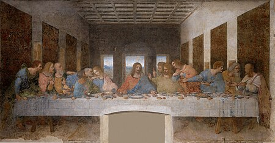

Leonardo di ser piero da vinci (15 Nisan 1452 - 2 Mayıs 1519), Rönesans döneminde yaşamış İtalyan hezârfen, döneminin önemli bir filozofu, astronomu, mimarı, mühendisi, mucidi, matematikçisi, anatomisti, müzisyeni, heykeltıraşı, botanisti, jeoloğu, kartografı, yazarı ve ressamıdır. En tanınmış yapıtları Vitruvius Adamı (1490-1492), Mona Lisa (1503-1507) ve Son Akşam Yemeği'dir (1495-1497). Rönesans sanatını doruğuna ulaştırmış, yalnız sanat yapısına değil, çeşitli alanlardaki araştırmaları ve buluşlarıyla da tanınan, dünyanın gelmiş geçmiş en büyük sanatçılarından ve dehalarından biri kabul edilmektedir.[1]
Son Akşam Yemeği ya da Son Yemek [İngilizce: The Last Supper (Dı Lest Sapır), İtalyanca: Il Cenacolo (İl Çenakolo) ya da L'Ultima Cena (Lultima Çena)], Hristiyan inanışına göre İsa'nın çarmıha gerilmesinden önceki akşam havarileriyle yediği son yemek. Bu yemek sırasında yaptığı konuşmanın uzunca anlatıldığı Yuhanna Kitabı'nda İsa Mesih onlara, kendisi aralarından ayrıldıktan sonra gelecek olan Paraklit'le teselli bulmalarını söyler. Son Akşam Yemeği'inde İsa ve Havarileri Kutsal Kase'den şarap içiyorlar ve ekmek yiyorlardı.